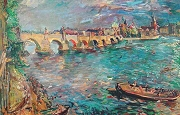

Otto Dix: Pražská ulice
Kteří čeští autoři psali svá díla německy?
Kteří němečtí spisovatelé žili na našem území před rokem 1900?
Umíš převyprávět nějakou židovskou pověst spjatou s Prahou?
|
PRAŽŠTÍ NĚMCI
Germánské kmeny obývaly naše území před jejich vytlačením Slovany v období stěhování národů. Němečtí kolonizátoři dorazili do Čech a Moravy ve 13. století na pozvání českého krále, aby zde zakládali první města a nové vesnice. Tito Němci se hlásili k Čechám jako k místu, kde se narodili a kde jsou doma. Jejich vlastenectví bylo zemské, nikoliv národní. V 19. století se Češi vymezili vůči Němcům jako národ na principu jazykovém a kulturním a začali s nimi v těchto oblastech soupeřit. Do vzniku Československa žily oba národy vedle sebe bez větších konfliktů. Řada obyvatel mluvila stejně dobře oběma jazyky a běžně se mezi sebou stýkali. Čechy a Němce rozdělila až vzedmutá vlna novodobého nacionalismu – českého fašismu a hitlerovského nacismu.
Kromě pohraničních území žila řada českých Němců také v Praze. Spisovatelé Kafka, Brod nebo Werfel se v tomto městě přímo narodili. Tito autoři pocházeli z židovských rodin. Uměli sice česky, ale svá díla psali německy. Spolupracovali s deníkem Prager Tagblatt i dalšími německými časopisy. Osobně se přátelili a vytvořili tzv. pražský kruh. Svou tvorbou si vydobyli světovou proslulost.
S Čechami je spjata tvorba nebo životní pouť také dalších německy píšících spisovatelů – Meyrinka, Musila, Krause nebo Rilka. V Příboře se narodil zakladatel psychoanalýzy Sigmund Freud. Pobývali zde expresionističtí malíři Oskar Kokoschka, Alfred Kubin nebo Egon Schiele.
Vzhledem k tomu, že většina autorů pražského kruhu měla židovské předky, museli utéct z Čech před Hitlerem. Po ukončení války se někteří z nich vrátili zpět.
|
Menšiny v Československu
Československo bylo mnohonárodnostním státem. Masaryk přišel s ideou čechoslovakismu, podle níž Češi a Slováci tvořili jeden společný národ. Tři miliony Němců, Maďaři, ale i Slováci a další menšiny jako Poláci, Rusíni, Židé nebo Romové se necítili rovnoprávně, což bylo zdrojem společenského napětí. Do republiky putovali uprchlíci z Ruska (Cvetajevová, Jakobson...) a z nacistického Německa (bratři Mannové, Brecht...), kterým vláda nabídla finanční pomoc a československé občanství. Německá menšina reprezentovaná Henleinovou stranou a podporovaná Hitlerem dosáhla 30. září 1938 odtržení Sudet, čehož využili i Maďaři. Za okupace byla většina Židů a Romů vyvražděna. Po roce 1945 došlo k masovému vysídlení Němců a Maďarů a přesídlování Romů ze Slovenska do Čech.
|
Franz Kafka (1883-1924)

Kafka se narodil v Praze, kde také strávil většinu života. Zemřel v sanatoriu v Kierlingu u Vídně na tuberkulózu. Vystudoval práva a pracoval jako úředník v Dělnické úrazové pojišťovně. Velmi složitý byl Kafkův vztah k tyranskému otci. Kafka varuje před odlidštěnou byrokratickou mašinerií. Z jeho próz čiší pocit odcizení, úzkosti, viny, strachu, méněcennosti a osamění, proto je považován za předchůdce existencialismu. Původně chtěl, aby jeho díla byla spálena, ale Kafkův přítel Max Brod je vydal. Kafka napsal povídky Proměna, Ortel nebo V kárném táboře a povídkové soubory Rozjímání, Venkovský lékař a Umělec v hladovění. Jeho romány Amerika (Nezvěstný), Proces a Zámek zůstaly nedokončeny. Vyšly též Kafkovy Deníky, nikdy neodeslaný Dopis otci nebo Dopisy Mileně, které adresoval své přítelkyni Jesenské.
Co víš o kafkovské konferenci v Liblicích, kterou uspořádal prof. Eduard Goldstücker roku 1963?
Jaký byl osud tohoto germanisty?
|
Franz Kafka: Proměna
Hlavní postavou povídky Proměna je obchodní cestující Řehoř Samsa, který se jednoho rána probudí jako brouk. Kafka líčí Řehořovy pocity, jeho snahu se s proměnou vypořádat i reakci rodiny. Řehoř dříve živil matku, otce i sestru, ale teď je jim na obtíž a hnusí se jim. Nakonec umírá žalem a na zranění, které mu způsobili.
Nejen pro povídku Proměna je typická atmosféra odcizení.
Franz Kafka: Proces
Nedokončený román Proces líčí iracionální soud s bezmocným člověkem. Bankovní úředník Josef K. je v den svých 30. narozenin obviněn neznámým soudem. Nikdy se ale nedozví proč. Je opakovaně předvoláván k podivným výslechům na půdě činžovního domu. Josef K. se cítí nevinen a považuje obžalobu za nesmyslnou. Marně se snaží soudní řízení ovlivnit. Spojí se s advokátem a dalšími lidmi, ale nikdo mu nepomůže. Po roce života v nejistotě ho dva muži odvedou z bytu do opuštěného lomu, kde ho popraví ranou do srdce jako psa.
|
Hans Fronius: Proměna
O čem pojednává ukázka z Proměny?
Můžeme Kafkovu povídku číst jako alegorii chování zdravých k nemocným? Proč?
Jakým tvorem bys chtěl/a být? Kterým ne? Proč?

Dora Maar: Simulant
Jak na tebe působí líčení práce advokátů?
Charakterizuj Kafkův styl.
Jak se ti líbí Kafkovy knihy?
Ve které Kafkově próze vystupuje postava nazvaná „K.“?
|
Franz Werfel (1890-1945)
Werfel se narodil v Praze a zemřel v Beverly Hills. Přátelil se s Kafkou, Brodem, Kischem, Musilem nebo Heinrichem Mannem. Roku 1938 utekl do Francie a později do USA. Byl hluboce věřící. Napsal řadu básnických sbírek – Jsme, Den soudu, dramat – Kozlí zpěv, Zrcadlový člověk, Království boží v Čechách, Jakobowsky a plukovník, novel – Ne vrah, zavražděný je vinen, Smrt maloměšťáka i románů – Sjezd abiturientů, Čtyřicet dnů, Píseň o Bernadettě.
|
Franz Werfel: Dům smutku
Povídka Dům smutku se odehrává ve vyhlášeném pražském nevěstinci, který sídlil v Kamzíkové ulici a navštěvovali ho muži z nejvyšších kruhů politických, společenských i kulturních. Werfel zachycuje život ve veřejném domě na sklonku jeho existence. Pokojnou atmosféru narušují občasné hádky mezi prostitutkami a zákazníky. Jako blesk z čistého nebe ale působí zpráva o atentátu v Sarajevu. Umírá také majitel bordelu. Válka a noví vlastníci vedou nevěstinec k úpadku. Po skončení 1. světové války je veřejný dům zrušen zákonem a končí jeho staletá existence, která sahala až do období třicetileté války. Pověsti dokonce praví, že jeho zakladatelem byl sám Karel IV.
|

Proč je prostituce nazývána nejstarším řemeslem světa?
Co si myslíš o prostitutkách a prostitutech?
Které negativní společenské jevy jsou s prostitucí svázány?
|
Rainer Maria Rilke (1875-1926)
Rilke pocházel z Prahy a zemřel ve Valmontu. Působil jako tajemník u francouzského sochaře Rodina. Je autorem básnické skladby Píseň o lásce a smrti korneta Kryštofa Rilka nebo básnických sbírek Kniha hodinek, Kniha obrazů či Advent.
Jak na tebe působí verše z ukázek?
Pokus se o rozbor básně Slepá.
|
Rilkova poezie
Rilkova poezie má blízko k expresionismu i symbolismu. Jeho tvorba velmi ovlivnila české autory spirituální a meditativní lyriky.
|

Rilke s manželkou
|
Gustav Meyrink (1868-1932)
Meyrink se narodil ve Vídni a zemřel ve Stranbergu. Krátce pobýval v Praze, kam také situoval svůj román Golem. Zajímal se o esoteriku a konvertoval k buddhismu. Je rovněž autorem románů Valpuržina noc nebo Dům alchymistův.

Schiele: Český Krumlov

Kokoschka: Praha
|
Gustav Meyrink: Golem
Mysteriózní román Golem se odehrává v Praze poloviny 19. století. Hlavní postavou je rytec kamejí Athanasius Pernath, který prodělal těžkou duševní chorobu, při níž ztratil paměť. S mudrcem Hillerem putuje pražským židovským ghettem. Zažívá řadu dobrodružství a nakonec se usadí v domě, kde podle pověstí zmizel Golem. Při požáru náhodou objeví tajnou místnost, ve které se ukrývá Hiller s dcerou Mirjam. V tu chvíli se vypravěč probouzí. Vše byl totiž sen, během něhož se přenesl o několik desetiletí do minulosti. Po probuzení objeví klobouk s Pernathovým jménem, a když ho jde vrátit, spatří Mirjam a Pernatha – svého dvojníka...
Román obsahuje řadu odkazů ke kabale, alchymii a dalším hermetickým naukám.
Další autoři a jejich díla
Max Brod: Franz Kafka, Pražský kruh, Život plný bojů
Egon Ervin Kisch: Zuřivý reportér, Pražský pitaval, Nanebevstoupení Tonky Šibenice
Franz Carl Weiskopf: Převrat, Loučení, Uprostřed proudu
Karl Kraus: Poslední dnové lidstva
Pavel Eisner: Chrám i tvrz, Čeština poklepem a poslechem
|

Kdo je rabín? Co jsou taroky?
Najdi přesný význam slov z ukázky, kterým nerozumíš.
Co víš o Golemovi?
Nakresli Golema.
Napiš povídku s motivem dvojníků.
Zajímáš se o alchymii nebo astrologii? Proč?
Pražské židovské ghetto před asanací
|
Internetové stránky
Kafka
Kafka
Kafka
Společnost Franze Kafky
Kafka
Kafka
Hrubý: Siřem, článek
Rulf: Franz Kafka, článek
Brod
Rilke
Rilke
Rilke
Rilke
Vila Tugendhat
Volf: Vila Tugendhat, článek
Volf: Adolf Loos – Müllerova vila, článek
Tipy
Cena Maxe Broda, soutěž pro studenty
Franz Kafka žil v Praze,
CD-ROM
Mareš: Kohoutí kříž, studie a medailony s ukázkami německé lyriky, lyrických črt v próze a jiného čtení ze Šumavy v originálním veršovém znění a překladech
Schiele, malíř
Schiele, malíř
Kubin, malíř
Kubin, malíř
Filmy
Stíny a mlha, režie W.Allen (parodie na Kafkovy knihy)
Exkurze
Židovské památky v Praze
Nejbližší synagoga nebo židovský hřbitov ve tvém okolí
Třebíč, památky UNESCO
Egon Schiele art centrum, Český Krumlov
|
Doporučená četba
Brod, Max: Franz Kafka, přel. Čermák, Kafka, Odeon, Praha 1966
Brod, M.: Pražský kruh, přel. I.Vízdalová, Akropolis, Praha 1993
Brod, M: Život plný bojů, přel. B.Fučík, Mladá fronta, Praha 1966
Goldstücker, Eduard: Na téma Franz Kafka, Články a studie, ČSS, Praha 1964
Hamšík, D., Kusák, A.: O zuřivém reportéru E.E.Kischovi, Praha 1962
Holan, Vladimír: Překlady (R.M.Rilke)
Jungk, Peter Stephan: Franz Werfel, Příběh života, přel. A.Bláhová, Sefer, Praha 1997
Kafka, Franz: Dopisy Mileně, Nakladatelství Franze Kafky, Praha 2001
Kafka, F.: Nezvěstný, přel. J.Čermák, Melantrich, Praha 1990
Kafka, F.: Zámek, přel. V.Kafka, Nakladatelství Franze Kafky, Praha 1997
Kautman, František: Svět Franze Kafky, Torst, Praha 1990
Kosatík, Pavel: Menší knížka o německých spisovatelích z Čech a Moravy, Nakladatelství Franze Kafky, Praha 2001
Kuper, Peter: Proměna, Netopejr (komiks)
Mairowitz, Crumb: Kafka, Portál, Praha 2003 (komiks)
Mezery v historii 1890-1938, Polemický duch Střední Evropy – Němci, Židé, Češi, Praha 1994 (katalog k výstavě)
Pražská německá literatura, Aula, Praha 1995 (katalog k výstavě)
Pytlík, Radko: Pražská dobrodružství E. E. Kische, Panorama, Praha 1985
Rainer Maria Rilke, Evropský básník z Prahy, H&H, Praha 1996
Reinerová, Lenka: Kavárna nad Prahou, přel. J.Zoubková, Praha 2001
Rozumět dějinám, Vývoj česko-německých vztahů na našem území v letech 1848-1948, Gallery, Praha 2002
Seibt, Ferdinand: Nemecko a Češi, přel. P.Dvořáček, Praha 1996
Serke, Jurgen: Böhmische Dörfer, Putování opuštěnou krajinou, Triáda, Praha 2001
Škrabák, Josef: Včerejší strach, Vyšehrad, Praha 2005
Václavek, Ludvík: Stati o německé literatuře vzniklé v českých zemích, Olomouc 1991
Veselý, Jiří a kol.: Azyl v Československu 1933-1938, Naše vojsko, Praha 1983
Vilímková, Milada: Židovské Město pražské, Aventinum, Praha 1993
Werfel, Franz: Čtyřicet dnů, přel. H.Karlach, Vyšehrad, Praha 1988
Werfel, F.: Píseň o Bernadettě, přel. J.Fučíková Vyšehrad, Praha 1999
Ze židovského ghetta, Pověsti, legendy a vyprávění, přel. J.Zoubková, Volvox Globator, Odeon, Praha 1996
|
Vypracuj písemný referát o některé z uvedených knih.
Kafkův portrét
První vydání Kafkovy Proměny z roku 1916 v němčině

Kokoschka: Emigranti
|
|